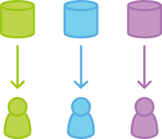

Forking 工作流
Forking 工作流和前面讨论的几种工作流有根本的不同。这种工作流不是使用单个服务端仓库作为『中央』代码基线，而让各个开发者都有一个服务端仓库。这意味着各个代码贡献者有 2 个 Git 仓库而不是 1 个：一个本地私有的，另一个服务端公开的。

Forking 工作流的一个主要优势是，贡献的代码可以被集成，而不需要所有人都能 push 代码到仅有的中央仓库中。开发者 push 到自己的服务端仓库，而只有项目维护者才能 push 到正式仓库。这样项目维护者可以接受任何开发者的提交，但无需给他正式代码库的写权限。
效果就是一个分布式的工作流，能为大型、自发性的团队（包括了不受信的第三方）提供灵活的方式来安全的协作。也让这个工作流成为开源项目的理想工作流。
工作方式
和其它的 Git 工作流一样，Forking 工作流要先有一个公开的正式仓库存储在服务器上。但一个新的开发者想要在项目上工作时，不是直接从正式仓库克隆，而是 fork 正式项目在服务器上创建一个拷贝。
这个仓库拷贝作为他个人公开仓库 —— 其它开发者不允许 push 到这个仓库，但可以 pull 到修改（后面我们很快就会看这点很重要）。在创建了自己服务端拷贝之后，和之前的工作流一样，开发者执行 git clone 命令克隆仓库到本地机器上，作为私有的开发环境。
要提交本地修改时，push 提交到自己公开仓库中 —— 而不是正式仓库中。然后，给正式仓库发起一个 pull request，让项目维护者知道有更新已经准备好可以集成了。对于贡献的代码，pull request 也可以很方便地作为一个讨论的地方。
为了集成功能到正式代码库，维护者 pull 贡献者的变更到自己的本地仓库中，检查变更以确保不会让项目出错，合并变更到自己本地的 master 分支，然后 push master 分支到服务器的正式仓库中。到此，贡献的提交成为了项目的一部分，其它的开发者应该执行 pull 操作与正式仓库同步自己本地仓库。
正式仓库
在 Forking 工作流中，『官方』仓库的叫法只是一个约定，理解这点很重要。从技术上来看，各个开发者仓库和正式仓库在Git看来没有任何区别。事实上，让正式仓库之所以正式的唯一原因是它是项目维护者的公开仓库。
Forking 工作流的分支使用方式
所有的个人公开仓库实际上只是为了方便和其它的开发者共享分支。各个开发者应该用分支隔离各个功能，就像在功能分支工作流和 GitFlow 工作流一样。唯一的区别是这些分支被共享了。在 Forking 工作流中这些分支会被 pull 到另一个开发者的本地仓库中，而在功能分支工作流和 GitFlow 工作流中是直接被 push 到正式仓库中。
示例
项目维护者初始化正式仓库

和任何使用 Git 项目一样，第一步是创建在服务器上一个正式仓库，让所有团队成员都可以访问到。通常这个仓库也会作为项目维护者的公开仓库。
公开仓库应该是裸仓库，不管是不是正式代码库。所以项目维护者会运行像下面的命令来搭建正式仓库：
ssh user@host
git init --bare /path/to/repo.git
Bitbucket 和 Stash 提供了一个方便的 GUI 客户端以完成上面命令行做的事。这个搭建中央仓库的过程和前面提到的工作流完全一样。如果有现存的代码库，维护者也要 push 到这个仓库中。
开发者 fork 正式仓库

其它所有的开发需要 fork 正式仓库。可以用 git clone 命令用 SSH 协议连通到服务器，拷贝仓库到服务器另一个位置 —— 是的，fork 操作基本上就只是一个服务端的克隆。Bitbucket 和 Stash 上可以点一下按钮就让开发者完成仓库的 fork 操作。
这一步完成后，每个开发都在服务端有一个自己的仓库。和正式仓库一样，这些仓库应该是裸仓库。
开发者克隆自己 fork 出来的仓库

下一步，各个开发者要克隆自己的公开仓库，用熟悉的 git clone 命令。
在这个示例中，假定用 Bitbucket 托管了仓库。记住，如果这样的话各个开发者需要有各自的 Bitbucket 账号，使用下面命令克隆服务端自己的仓库：
git clone https://user@bitbucket.org/user/repo.git
相比前面介绍的工作流只用了一个 origin 远程别名指向中央仓库，Forking 工作流需要 2 个远程别名 —— 一个指向正式仓库，另一个指向开发者自己的服务端仓库。别名的名字可以任意命名，常见的约定是使用 origin 作为远程克隆的仓库的别名（这个别名会在运行 git clone 自动创建），upstream（上游）作为正式仓库的别名。
git remote add upstream https://bitbucket.org/maintainer/repo
需要自己用上面的命令创建 upstream 别名。这样可以简单地保持本地仓库和正式仓库的同步更新。注意，如果上游仓库需要认证（比如不是开源的），你需要提供用户：
git remote add upstream https://user@bitbucket.org/maintainer/repo.git
这时在克隆和 pull 正式仓库时，需要提供用户的密码。
开发者开发自己的功能
在刚克隆的本地仓库中，开发者可以像其它工作流一样的编辑代码、提交修改和新建分支：
git checkout -b some-feature
// Edit some code
git commit -a -m "Add first draft of some feature"
所有的修改都是私有的直到 push 到自己公开仓库中。如果正式项目已经往前走了，可以用 git pull 命令获得新的提交：
git pull upstream master
由于开发者应该都在专门的功能分支上工作，pull 操作结果会都是快进合并。
开发者发布自己的功能
一旦开发者准备好了分享新功能，需要做二件事。首先，通过push他的贡献代码到自己的公开仓库中，让其它的开发者都可以访问到。他的 origin 远程别名应该已经有了，所以要做的就是：
git push origin feature-branch
这里和之前的工作流的差异是，origin 远程别名指向开发者自己的服务端仓库，而不是正式仓库。
第二件事，开发者要通知项目维护者，想要合并他的新功能到正式库中。Bitbucket 和 Stash 提供了 Pull Request 按钮，弹出表单让你指定哪个分支要合并到正式仓库。一般你会想集成你的功能分支到上游远程仓库的 master 分支中。
项目维护者集成开发者的功能

当项目维护者收到 pull request，他要做的是决定是否集成它到正式代码库中。有二种方式来做：
- 直接在 pull request 中查看代码
- pull 代码到他自己的本地仓库，再手动合并
第一种做法更简单，维护者可以在 GUI 中查看变更的差异，做评注和执行合并。但如果出现了合并冲突，需要第二种做法来解决。这种情况下，维护者需要从开发者的服务端仓库中 fetch 功能分支，合并到他本地的 master 分支，解决冲突：
git fetch https://bitbucket.org/user/repo feature-branch
// 查看变更
git checkout master
git merge FETCH_HEAD
变更集成到本地的 master 分支后，维护者要 push 变更到服务器上的正式仓库，这样其它的开发者都能访问到：
git push origin master
注意，维护者的 origin 是指向他自己公开仓库的，即是项目的正式代码库。到此，开发者的贡献完全集成到了项目中
开发者和正式仓库做同步

由于正式代码库往前走了，其它的开发需要和正式仓库做同步：
git pull upstream master
总结
如果你之前是使用 SVN，Forking 工作流可能看起来像是一个激进的范式切换（paradigm shift）。但不要害怕，这个工作流实际上就是在功能分支工作流之上引入另一个抽象层。不是直接通过单个中央仓库来分享分支，而是把贡献代码发布到开发者自己的服务端仓库中。
示例中解释了，一个贡献如何从一个开发者流到正式的 master 分支中，但同样的方法可以把贡献集成到任一个仓库中。比如，如果团队的几个人协作实现一个功能，可以在开发之间用相同的方法分享变更，完全不涉及正式仓库。
这使得 Forking 工作流对于松散组织的团队来说是个非常强大的工具。任一开发者可以方便地和另一开发者分享变更，任何分支都能有效地合并到正式代码库中。